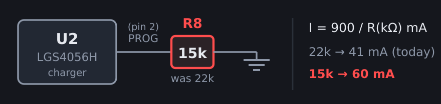
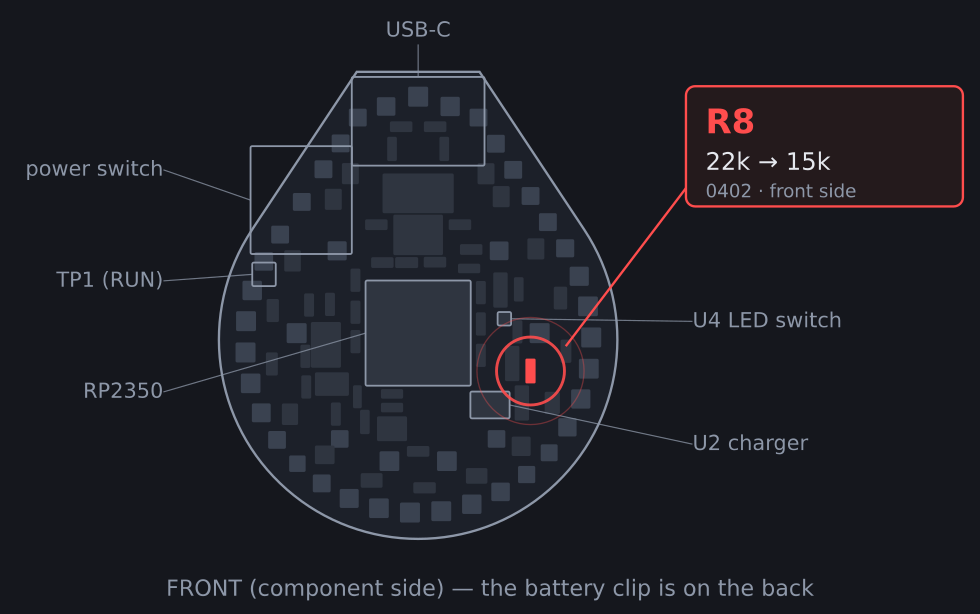
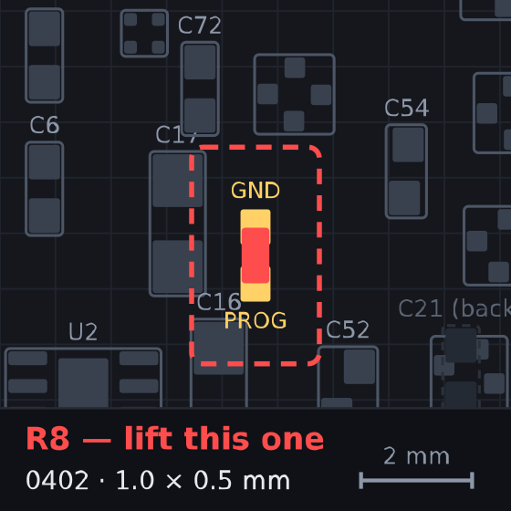

Existing (ordered) boards · rev 43eadc1 · geometry and
netlist read from that commit, not the working tree
I(mA) = 900 / R(kΩ)The fitted cell is a Cornell Dubilier RJD2032C1, whose datasheet specifies a charging current of 40 mA (0.5C) — with no published maximum. Today's 22k gives 40.9 mA, so the board is already at the cell's rated charge current. On the ordered boards the power switch cuts the LDO enable directly, so with SW2 off the cell receives the whole programmed current — 15k alone would push 60 mA, 50% over spec, every time you charge switched off. Add the EN network (option A) or stay at 22k.
There is no power path. The NCP730's input and the LGS4056H's BAT pin are the
same VBATT node, so the programmed current is split between the
system and the cell. With R8 = 22k the charger sources 41 mA and the
running board eats most of it.
Two rates on the same cell near the same voltage, so the cell's unknown dQ/dV cancels out:
(I_sys = I_prog / (1 + chg/dis). Independently consistent
with the datasheet estimate of 15–20 mA. Treat as ±30%.)
45 × SK6805 draw 0.3 mA each just being powered — 13.5 mA before a single
pixel lights (bom/parts.yaml:46). With ~4 mA of dim emission the rail
costs ~17.5 mA whenever it is up.
This is the case that decides the value, and on the ordered boards it is not a corner case — switch off, plug in is the natural way to leave an earring charging.
The ordered netlist is unambiguous:
SW2 1=VBATT 2=PWR_EN 3=GND ← common wired STRAIGHT to the enable
U3 4=PWR_EN 6=VBATT ← NCP730 EN
PWR_EN net members: SW2.2, U3.4 ← nothing else on itSo with SW2 off and USB plugged in:
PWR_EN is pulled to GND by the switch → NCP730 disabled →
3V3 dead → MCU off;LED_EN falls to GND through R10 (10k) → TPS22913 off →
LED rail off;The ordered boards have no rev-2 EN network. R17,
R18 and D2 — the parts that let USB hold the LDO on
regardless of the switch — exist in the current circuit.py but
are not on the fabricated boards (123 footprints at 43eadc1;
R17/R18/R19/R20/D2/Q1/R16 all absent). The firmware header's "rev 2 power scheme:
USB boots the chip even with SW2 off" does not describe this hardware.
Which means a single resistor cannot satisfy both operating modes:
22k sits exactly at the SW2-off limit (40.9 mA vs the datasheet's 40 mA). Any increase at all trades that guarantee away. That is the real design tension, and it is worth naming rather than papering over.
The way out is not a different resistor — it is making the load impossible to remove. With the EN network fitted, SW2-off + USB still boots the MCU, so the cell tops out at 60 − 17.3 ≈ 43 mA (and ~39 mA once the indicator's LED duty is counted) in every switch position. That is the whole argument for option A.
Not the LIR2032 the schematic names — and the differences matter. From the RJD series datasheet (Feb-25):
Charging has no published maximum. The datasheet gives discharge as two columns — standard 16 mA and maximum 160 mA — but charging gets a single number: 40 mA. That asymmetry is deliberate. There is no "it'll take 1C" headroom to lean on: above 40 mA you are off-datasheet with nothing to cite.
And 22k already hits it. 900/22k = 40.9 mA ≈ the rated 40 mA. Whether by design or luck, the board as ordered is exactly at the cell's charge spec.
Budget with the LED rail up continuously — the demanding case. C rates are against 85 mAh; the last column is measured against the datasheet's 40 mA:
| R8 | I_prog | system | LED rail | into cell | cell rate | half charge | SW2 OFF → cell |
|---|---|---|---|---|---|---|---|
| 22k (today) | 40.9 mA | 17.3 mA | 17.5 mA | 6.1 mA | 0.07C | 6.9 h | 40.9 mA — at spec |
| 20k | 45.0 mA | 17.3 mA | 17.5 mA | 10.2 mA | 0.12C | 4.1 h | 45 mA — +13% |
| 18k | 50.0 mA | 17.3 mA | 17.5 mA | 15.2 mA | 0.18C | 2.8 h | 50 mA — +25% |
| 16k | 56.2 mA | 17.3 mA | 17.5 mA | 21.4 mA | 0.25C | 2.0 h | 56 mA — +41% |
| 15k | 60.0 mA | 17.3 mA | 17.5 mA | 25.2 mA | 0.30C | 1.7 h | 60 mA — +50% |
| 12k | 75.0 mA | 17.3 mA | 17.5 mA | 40.2 mA | 0.47C | 1.0 h | 75 mA — +88% |
"half charge" = time to put 42 mAh in at that current. Note the whole into cell column stays under 40 mA — with the switch on, every value here is spec-compliant, because the running board absorbs the difference. The problem lives entirely in the last column.
| Option | Parts | Lights while charging | SW2-off safety | Verdict |
|---|---|---|---|---|
| A. 15k + rev-2 EN network D2 BAT54S, R17 100k, R18 100k |
4 | yes, 25 mA to cell | ≤43 mA — within spec | the right answer |
| B. 18k alone | 1 | yes, 15 mA to cell | 50 mA, +25% over spec | off-datasheet, but mildly |
| C. 15k alone + switch discipline | 1 | yes, 25 mA to cell | 60 mA, +50% if you forget | not recommended on a wearable |
| D. leave 22k | 0 | no — 6 mA to cell | 40.9 mA — at spec | spec-correct; fix the goal in firmware |
With an 85 mAh cell rated at a flat 40 mA charge, option D is no longer merely "status quo" — it is the only single-part choice that stays on-datasheet in both switch positions. If the EN network is off the table, the honest path to "lights while charging" is firmware (duty-cycle the rail, idle the MCU between blinks) rather than more current.
Option A in one line: the rev-2 EN network makes the MCU impossible to
switch off while USB is present, which is exactly the guarantee 15k needs. The design
already exists at circuit.py:329–331 — you would be back-porting rev 2's
power scheme onto the ordered boards, not inventing anything.
It is real surgery though: cut the SW2 → U3.4 connection, then add
D2 (SOT-323 dual Schottky, SW_ON→PWR_EN in series plus the PWR_EN→VBATT clamp the
NCP730's V_EN ≤ V_IN + 0.3 abs-max requires), R17 (PWR_EN→GND) and R18
(VBUS→PWR_EN). Adding R18 alone does not work — a closed switch to ground
beats a 100k pull-up, which is precisely why rev 2 needed the series diode.
Five seconds, and it settles which row you are on. With USB connected and the board enumerated, flip SW2 to off:
Stock behaviour is to drop off. Note this also means "switched off" and "unplugged" look identical from the host — the ambiguity rev 3's R19/R20 VBUS sense was added to resolve.



Part not yet sourced. You need a 15 kΩ (or 18 kΩ) ±1% 0402. No LCSC
code here on purpose — this project has already been bitten by a part whose value was
right and whose package was an 0603 on an 0402 land. Verify the package on the LCSC
page, then add the entry to bom/parts.yaml.
Plug in, switch on, watch tools/charge_monitor.py:
chrg=1 throughout.If the rate does not move at all, that is a solder problem, not a
sizing problem — the charge rate scales with 900/R.
firmware/src/main.cpp:670). Ironically, switch-off charging is
the only mode that terminates correctly — no load, so the current really
does taper to the threshold.chargePct() (main.cpp:251) subtracts a flat
150 mV for IR rise while charging, which implies ~3.75 Ω of cell
resistance. The RJD2032C1 is ≤ 700 mΩ — at 40 mA the real rise is about
28 mV. The gauge is over-correcting by ~120 mV and therefore reads far
too low while charging: tonight's 3568 mV showed 3%, where ~6% is closer. The
voltage table is also shaped for a LiCoO2 LIR2032, not this NMC cell.circuit.py declares
LIR2032 (~40 mAh). The fitted cell is 85 mAh and 3.6 mm thick
vs a CR2032's 3.2 mm, which is a clip-fit question as well as a capacity one.scripts/circuit.py:277 still carries rprog_val = "22k"
and the 41 mA comment. Note that rev 2/3 does have the EN network, so
on a fresh board 15k is safe — the conflict on this page is specific to the
ordered hardware.Diagrams and netlist read from
out/earring.kicad_pcb at commit 43eadc1, the ordered
revision; regenerate with python3 scripts/gen_rework_svg.py. The
working-tree copy of that file is currently un-placed — all 131 footprints at one
point — so it cannot be used for rework geometry.